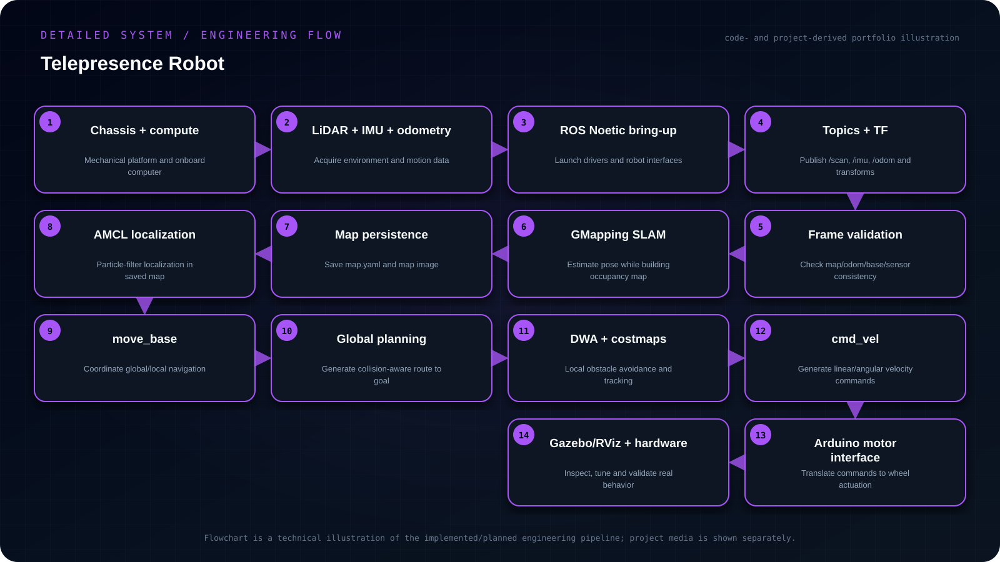

Objective
Build a ROS-based telepresence mobile robot that combines mapping, localization and autonomous navigation with onboard sensing and Arduino-based low-level drive control, so remote presence can operate on top of a reliable mobility stack.
- Integrate LiDAR, IMU/odometry and robot frames into a consistent ROS Noetic data model.
- Create and save a 2D occupancy map with GMapping, then localize against it using AMCL.
- Use move_base and DWA for global/local navigation and obstacle-aware velocity generation.
- Bridge high-level cmd_vel commands to the Arduino motor layer and validate the stack in Gazebo/RViz and hardware.
My contribution
- Used LiDAR-based GMapping to create occupancy-grid maps, AMCL for localization and move_base with DWA for local motion planning.
- Arduino-based motor control handled base actuation while ROS nodes connected perception, localization and navigation.
- A Gazebo model and RViz were used for debugging and visualization.
System architecture
LiDAR/IMU/encoder data → ROS topics and TF → SLAM or AMCL → global/local navigation stack → velocity command → Arduino motor controller → differential-drive base.

Read the architecture as text
- Chassis + compute — Mechanical platform and onboard computer
- LiDAR + IMU + odometry — Acquire environment and motion data
- ROS Noetic bring-up — Launch drivers and robot interfaces
- Topics + TF — Publish /scan, /imu, /odom and transforms
- Frame validation — Check map/odom/base/sensor consistency
- GMapping SLAM — Estimate pose while building occupancy map
- Map persistence — Save map.yaml and map image
- AMCL localization — Particle-filter localization in saved map
- move_base — Coordinate global/local navigation
- Global planning — Generate collision-aware route to goal
- DWA + costmaps — Local obstacle avoidance and tracking
- cmd_vel — Generate linear/angular velocity commands
- Arduino motor interface — Translate commands to wheel actuation
- Gazebo/RViz + hardware — Inspect, tune and validate real behavior
Implementation
Used LiDAR-based GMapping to create occupancy-grid maps, AMCL for localization and move_base with DWA for local motion planning. Arduino-based motor control handled base actuation while ROS nodes connected perception, localization and navigation. A Gazebo model and RViz were used for debugging and visualization.
Engineering decisions
Simulation was used as the first integration layer so navigation and frame issues could be isolated before involving hardware limitations such as motor choice and static friction.
Challenges & debugging
The project combined mobile-base hardware, sensing and ROS navigation. The main engineering challenge was getting mapping, localization and motion control to behave coherently across simulation and the physical robot.
Validation
Tested the navigation workflow in simulation before transferring it to the real platform. Debugging focused on transforms, localization stability, map quality and whether commanded velocities were sufficient for the physical base.
Outcome & boundaries
Integrated mapping, localization, navigation and Arduino actuation across simulation and the physical platform.
Project sources
Implementation notes and available project sources. Public code is linked where available; descriptive diagrams are not independent validation.

{kind=link}